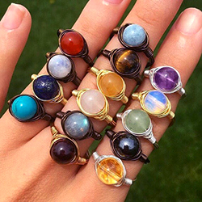
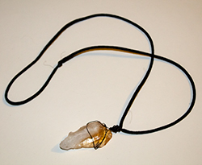

Crystal Rings

When meditating Crystal healers will place a related crystal on the chakra. This boosts the circulation of energy and provides a deeper focus while meditating.
Some people will just hold the crystal in their hands during their practice.
Many crystal and spiritual shops sell big crystal decor to use in your home. Plenty of artists sell different crystal decor. Etsy is a great place to find some!
A way to always have the crystal energy circulating with yours is to wear it.
Often times, individuals will wear necklaces with a crystal relating to the heart or solar plexus chakra.
